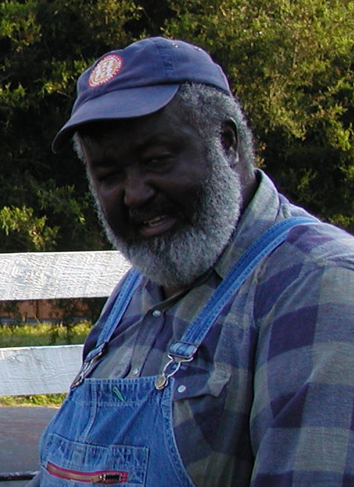
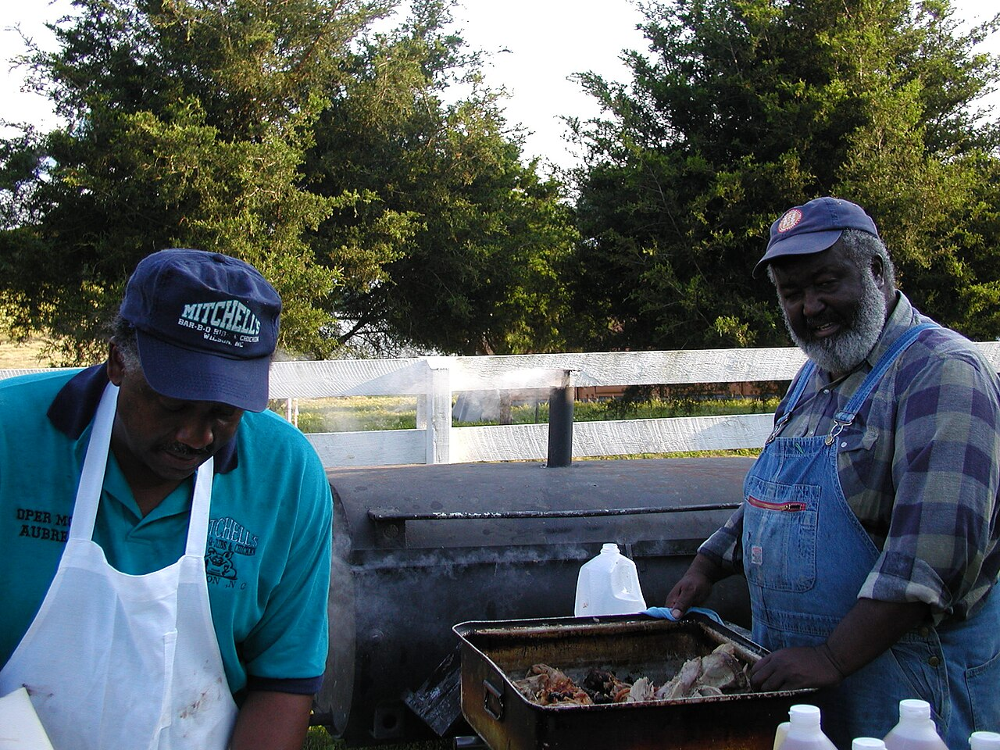
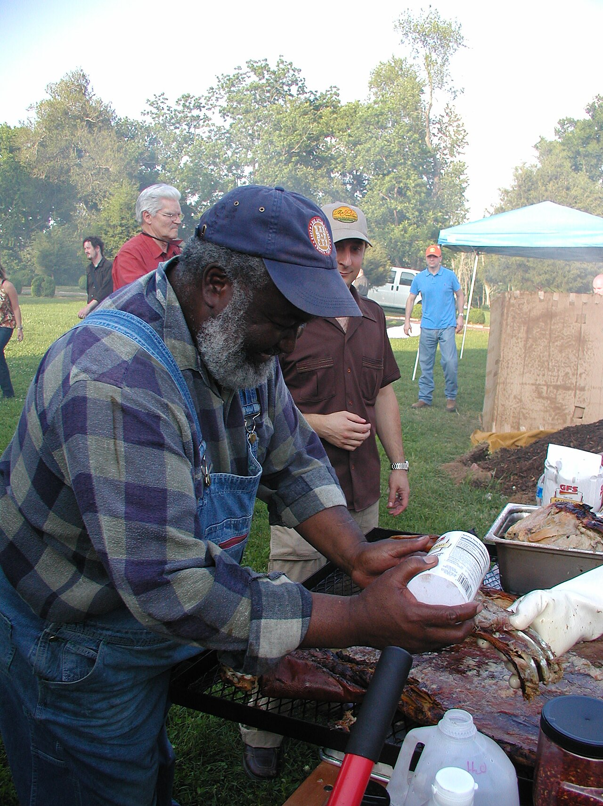

a person · NCEd Mitchell
also: The Pitmaster · Pitmaster Ed Mitchell

Ed Mitchell (born 1948 or 1949) is a whole-hog pitmaster from Wilson who began cooking pigs behind his family's grocery store in the early 1990s, turned the store into Mitchell's Ribs, Chicken & Bar-B-Q, co-founded The Pit in Raleigh in 2007, and has argued for pasture-raised heritage hogs since the 2000s. The Southern Foodways Alliance recorded him in 2007; the American Royal put him in its Barbecue Hall of Fame in 2022. His book, Ed Mitchell's Barbeque, written with his son Ryan Mitchell and Zella Palmer, came out from Ecco in 2023.
The story Cited · sfa-mitchells-ribs
He cooked his first pig at fourteen or fifteen, at a family gathering in Wilson where the men had passed the moonshine and fallen asleep; his grandfather woke to a cooked hog, asked who had done it, and poured him a glass. 'Growing up, all our lives on any celebration... it had to be accompanied by barbecue,' he told Amy Evans of the Southern Foodways Alliance in September 2007. After his father died — in 1991, by his own account in WALTER magazine; 1990 by the Alliance's — his mother asked for barbecue, he cooked a pig behind Mitchell's Grocery, customers asked for it, and by 1992 the store was Mitchell's Ribs, Chicken & Bar-B-Q. From 2002 he headlined New York's Big Apple Barbecue Block Party each year; in 2003 he began cooking free-range pigs. The Wilson restaurant closed in 2004 or 2005 amid a state tax case. In 2007 he opened The Pit in Raleigh with a real-estate developer and left it in May 2011; Que, in Durham's American Tobacco campus, ran less than a year from 2014. He cooks hot and fast, a bank of coals around the hog, 500 degrees falling to 250, with a rub of salt, black and red pepper and onion powder and a sauce of cider vinegar, crushed red pepper, salt, sugar and black pepper; he wants the whole hog because a sandwich needs shoulder, ham and belly together. With Ryan he has worked with True Made Foods on sauces since 2018 and announced The Preserve, a Raleigh restaurant with LM Restaurants, in 2019. 'I barbeque not because I love hoisting 150-pound hogs over my shoulders, but because I want to keep the tradition of my African American ancestors alive,' he wrote in 2023.
Today Cited · web-barbecuebros-ed-mitchell-2024
Living. He has not run a restaurant since Que closed in 2015; he ships barbecue from a smokehouse in Micro, Johnston County, through Goldbelly, sells sauces with True Made Foods, and works with his son Ryan. The Preserve, announced for Raleigh in 2019, had not opened as of July 2024.
Facts
| role | pitmaster, founder, writer |
|---|---|
| state | NC |
| styles | Eastern North Carolina barbecue |
| region | Eastern North Carolina, North Carolina |
| links | Ed Mitchell (pitmaster) — Wikipedia · Mitchell's Ribs, Bar-B-Q & Chicken — SFA oral history (2007) · The Rise and Fall and Rise of Pitmaster Ed Mitchell — Gravy (SFA) · Ed Mitchell & Sons — official |
| confidence | high · needs verification · updated 2026-09-15 |
Its kin
Pages that point here
Pictures
{kind=link}

{kind=link}

{kind=link}
Sources
- Ed Mitchell (pitmaster) — Wikipedia · link
- Mitchell's Ribs, Bar-B-Q & Chicken — Ed Mitchell, interviewed by Amy Evans, 5 Sep 2007 · link
- The Rise and Fall and Rise of Pitmaster Ed Mitchell — Gravy podcast (reported by Wilson Sayre; episode page dated 22 May 2024) · link
- 'I Can't Give Up' by Ed Mitchell — WALTER Magazine (June 2023) · link
- Ed Mitchell & Sons — The Legend · link
- The Rise and Fall and Rise of Pitmaster Ed Mitchell — Barbecue Bros (19 Jul 2024) · link
- Ed Mitchell BBQ: The Pitmaster Behind Authentic Barbecue — True Made Foods blog (29 Aug 2026) · link
- BBQ Hall of Fame Inductees Announced — Robert F. Moss (25 May 2022) · link
- Ed Mitchell's Barbeque — Ed Mitchell, Ryan Mitchell and Zella Palmer, 2023
- Wood — The Campaign for Real Barbecue · link
Provenance marks: Cited a named source, linked · Harvested fetched from an open dataset · Tradition general knowledge of the tradition, hedged · Inference this project's reasoning · Field someone stood there. This record as JSON.